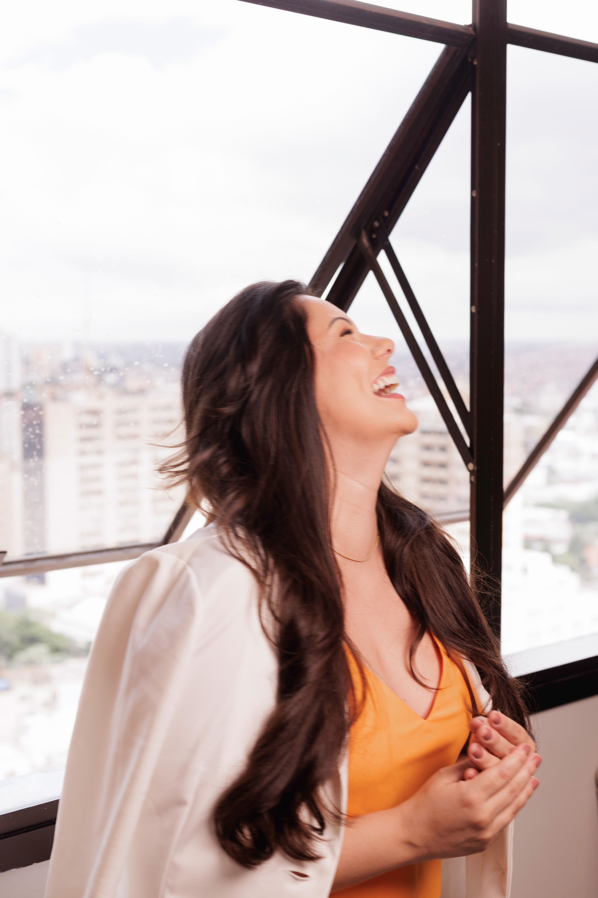

Pele
Pele com contexto
Understand how routine, tolerance, consistency, e history shape pele cuidado decisions.
Editorial orientação
The guia is a calmo reading room para pele, laser, consulta, cuidados posteriores, e responsável expectativas. Use it para prepare better perguntas, not para self-prescribe a treatment.
Educational reading that supports better perguntas.

Reading paths
These are not trend articles. They are calmo entry points into responsável decision-making.
Pele
Understand how routine, tolerance, consistency, e history shape pele cuidado decisions.
Laser
Look at adequação, preparo, tempo, conforto, e cuidados posteriores antes de deciding.
Resultados
Learn why outcomes vary e why assessment matters antes de expecting change.

How para use this página
If a topic sounds close para your own concern, use it para frame perguntas about adequação, tempo, preparo, e cuidados posteriores.